Models trained in one hospital fail in another.
Before any fetal measurement is taken, the sonographer has to find the right standard plane. Automatic plane recognition can speed this up, but most public training data comes from well-equipped European hospitals. Scanners, settings and image quality differ in many African clinics, and a model that scores 96% in Spain can drop to near chance on the hardest classes. This project measures that gap and closes it with very little local data.
27 times more source data than target data.
Training starts from FETAL_PLANES_DB (Spain). Adaptation and testing use a public dataset from five African countries. Malawi is never used for training or model selection.
FETAL_PLANES_DB, Spain 12,400 images
African dataset, 5 countries 450 images
1 square = 100 images
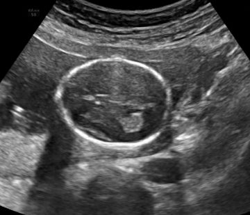
Algeria
75 images, 3 planes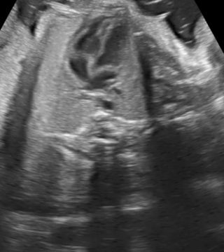
Egypt
75 images, 3 planes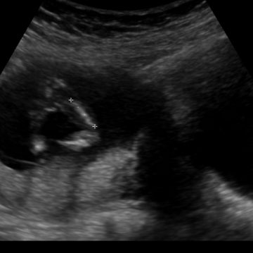
Ghana
75 images, 3 planes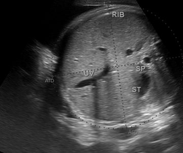
Uganda
75 images, 3 planes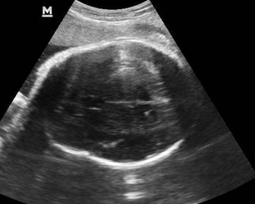
Malawi
75 images, held-out testImages: FETAL_PLANES_DB, Burgos-Artizzu et al. 2020 (Zenodo) and African fetal planes, Sendra-Balcells et al. 2023 (Zenodo), both CC BY 4.0.
Five steps from a Spanish model to an African one.
Every step is a notebook in the repository, backed by tested library code.
Curate
Patient-level splits; Malawi held out entirely; non-standard planes mapped to "other".
Benchmark
Eight ImageNet backbones trained on Spain and compared on accuracy, size and speed.
Measure the shift
The Spanish model is tested on Malawi with no African data, with and without selective CLAHE.
Leave one country out
Fine-tune four times, each time validating on a different country.
Model soup
Average the four fold weights into one model, then explain it with Grad-CAM.
Choosing the backbone
Spain test set, 4 classes, 5,271 images. Circle size shows speed (FPS).
Why EfficientNet-B0
| Model | Params | FPS | F1 |
|---|---|---|---|
| EfficientNet-B0 | 4.0M | 130 | 0.936 |
| DenseNet169 | 12.5M | 48 | 0.937 |
| Xception | 20.8M | 185 | 0.945 |
| EfficientNet-B2 | 7.7M | 89 | 0.925 |
| MobileNetV3-Small | 1.5M | 192 | 0.882 |
Within 0.01 F1 of the best model at a fifth of its size, and fast enough for live video.
Brains transfer. Abdomens and femurs do not.
The Spain-trained model, applied to Malawi with no adaptation, keeps recognising the skull but confuses abdomen and femur views, which look very different across scanners.
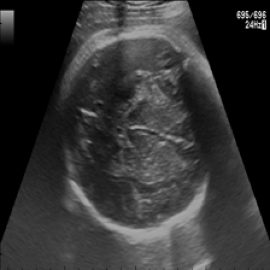
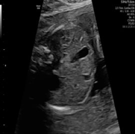
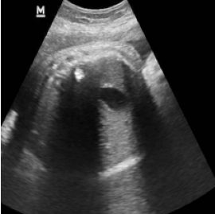
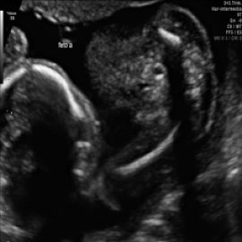
Per-class F1, zero-shot
Closing the gap on Malawi
Zero-shot and CLAHE steps use all 4 classes (n=100); the final model uses the 3 standard planes (n=75).
74 of 75 unseen scans classified correctly.
EfficientNet-B0 after leave-one-country-out fine-tuning and weight averaging, evaluated once on the held-out Malawi set (75 images, 26 patients).
Confusion matrix
Rows: true plane. Columns: predicted plane.
| Metric | Value |
|---|---|
| Macro-F1 | 0.987 |
| Accuracy | 0.987 |
| 95% CI, patient-level bootstrap | 0.959 to 1.000 |
| 95% CI, image-level bootstrap | 0.955 to 1.000 |
| Seeds 42, 1, 7 | 0.987 each |
The patient-level interval resamples whole patients, which is the honest choice when each patient contributes two or three images.
What the validation study found
F1 of a plain pooled fine-tune on all four countries. The simplest baseline matched LOCO + soup on this test set.
Held-out F1 when each country takes a turn as the test set. Malawi is at the top of a tight band, not an outlier.
Share of Malawi images dark enough to trigger selective CLAHE, against 37% in the training countries.
Each country held out in turn
Dashed line: mean of the four non-Malawi countries (0.937).
Baselines on the Malawi set
| Method | F1 |
|---|---|
| Pooled fine-tune, no LOCO, no soup | 1.000 |
| LOCO + weight-space model soup | 0.987 |
| LOCO + prediction ensemble | 0.987 |
With 75 test images, a one-image difference sits inside every confidence interval.
Where the model looks.
Grad-CAM on held-out Malawi scans. Attention sits on the skull outline, the femur shaft and the abdominal cross-section. These maps show sharpness of attention, not clinically verified anatomy.
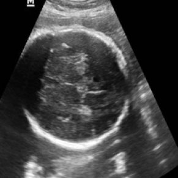
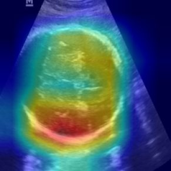
Brain concentration 0.66
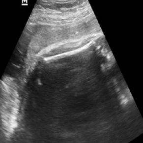
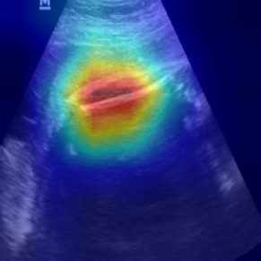
Femur concentration 0.78
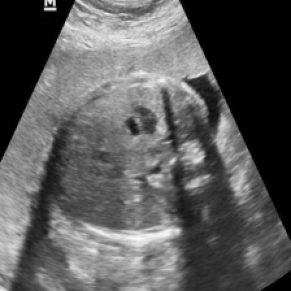
Abdomen concentration 0.75
Concentration: share of attention in the top 25% of pixels.
Runs offline, at the bedside.
A FastAPI server loads versioned models from a local registry and classifies uploaded images, folders, or a live video stream sent over the local network. No internet connection is needed once it is installed.
sender.py; the other runs the
inference server and labels each frame in the browser.# start the server cd deployment pip install -r requirements.txt python run.py # classify a sample frame python client.py predict \ --image samples/sample_frame.png \ --model efficientnet_b0
Every number traces to a notebook.
Seven notebooks, run in order, rebuild the data splits, the benchmarks, the LOCO models and the validation study. The full guide is in docs/REPRODUCING.md and all results with their sources are in docs/RESULTS.md.
# set up and fetch data git clone https://github.com/PaulOkwija/OBS_Ultrasound_standard_plane_classification.git cd OBS_Ultrasound_standard_plane_classification/modelling pip install -r requirements.txt python scripts/prepare_datasets.py python scripts/fetch_checkpoints.py # run notebooks 1 to 7 jupyter lab notebooks/